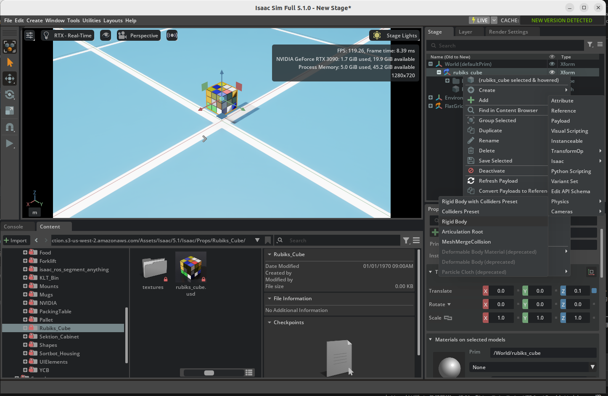
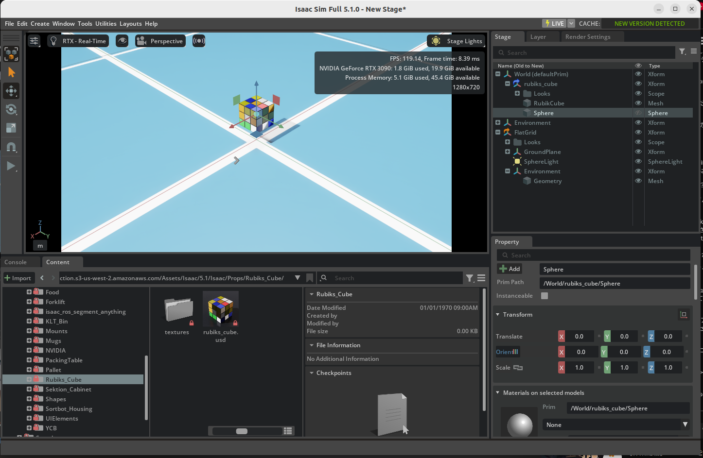
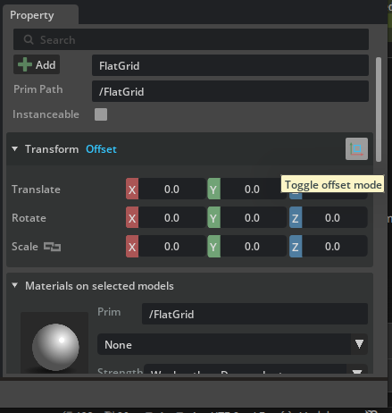
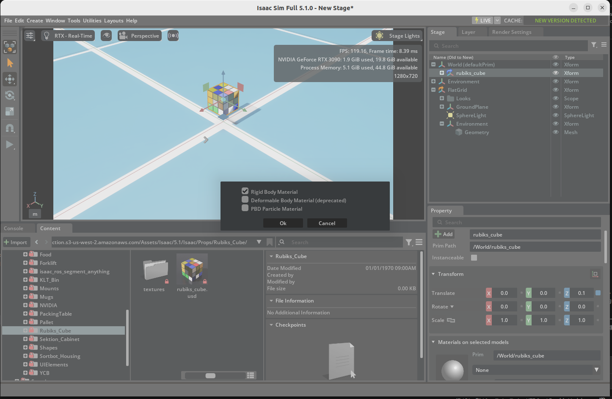

Adding Props¶
Learning Objectives¶
After completing this tutorial, you will have learned:
- How to add objects (Props) to a scene
- How to configure Rigid Body properties
- How to configure Collider properties
- How to set Mass properties
- How to visualize and customize collision shapes
- How to apply Physics Materials (restitution and friction)
Getting Started¶
Prerequisites¶
- Complete Tutorial 1: Hello World before starting this tutorial.
Estimated Time¶
Approximately 10-15 minutes.
Overview¶
In the previous tutorials, we used the Python API to add objects and robots to scenes. In this tutorial, we take a different approach and use GUI operations to add objects to a scene, then step by step configure the attributes required for physics simulation.
Objects participating in physics simulation in Isaac Sim need the following attributes properly configured:
| Attribute | Role |
|---|---|
| Rigid Body | Registers the object as a physics object affected by gravity and external forces |
| Collider | Enables collision detection with other objects |
| Mass | Sets mass, density, and inertia |
| Physics Material | Sets restitution (bounciness) and friction coefficients |
Note
When using Python API classes like DynamicCuboid, these attributes are automatically configured internally. With GUI operations, you need to add each attribute manually.
Adding a Rubik's Cube¶
First, create a new stage and place an object.
-
Click File > New to create a new stage.

-
In the Content Browser, navigate to Isaac Sim > Props > Rubiks_Cube > rubiks_cube.usd and drag-and-drop the USD file into the viewport.

-
Left-click the Rubik's Cube to select it, and set the Translate to
(0, 0, 0.1)in the Properties panel. -
Right-click on the stage and select Create > Isaac > Environment > Flat Grid to create a ground plane.

-
Press the PLAY button to start the simulation.
Result: The Rubik's Cube does not fall. Since no Rigid Body attribute has been set, the object is not part of the physics simulation.
-
Press the STOP button to stop the simulation.
Configuring Physics Properties¶
Adding Rigid Body Properties¶
- Right-click the Xform Rubik's Cube on the stage and select Add > Physics > Rigid Body.

Warning
In the following steps, be careful not to click the Rubik's Cube in the viewport and add attributes to the Mesh node. Attributes must be added to the Xform node, otherwise the simulation will not work correctly.
-
Press the PLAY button.
Result: The Rubik's Cube falls but passes through the ground. Adding a Rigid Body makes it affected by gravity, but without collision detection it cannot detect contact with the ground.

-
Press the STOP button.
Adding Collision Properties¶
-
Right-click the Xform Rubik's Cube on the stage and select Add > Physics > Collider Presets.
-
Press the PLAY button.
Result: The Rubik's Cube now lands on the ground. Collision detection is now enabled thanks to the Collider attribute.

-
Press the STOP button.
Adding Mass¶
-
Right-click the Xform Rubik's Cube on the stage and select Add > Physics > Mass.
-
In the Properties panel, scroll to the Mass section and set Mass to
0.1(100 grams).
About Mass Settings
Setting Mass to 0 causes the simulation to automatically compute mass at runtime based on the object's volume (assuming 1000 kg/m³ density if not explicitly specified). In addition to mass, you can also set Density, Center of Mass, Diagonal Inertia, and Principal Axes.
Visualizing Collision Shapes¶
Collision shapes are normally invisible, but they can be visualized for debugging.
-
Right-click the Eye icon in the top-left of the viewport and select Show By Type > Physics > Colliders > All.

Result: Collision shapes for all objects in the scene are displayed.
- The ground (static object) collider is shown in pink
- The Rubik's Cube (dynamic object) collider is shown in green

Collision Approximation Types
You can change the collision shape approximation method. Select the World/rubiks_cube/RubikCube mesh, then choose a different approximation type in the Approximation tab of the Physics/Collider section.
Customizing the Collision Shape¶
Let's replace the default collision shape (mesh approximation) with a simpler sphere to simulate rolling behavior.
-
Left-click the
World/rubiks_cube/RubikCubemesh and press the × button in the Physics/Collider section to delete the existing collider. -
Right-click the Xform Rubik's Cube on the stage and select Create > Shape > Sphere to add a sphere shape. Verify that the Sphere mesh is under the RubikCube Xform tree. If it was not created under the Xform, drag-and-drop the Sphere mesh to move it to the correct location. 
-
In the Geometry section, set the Radius to
0.07(sized to match the cube). -
Select the created sphere and add Add > Physics > Collider Presets.
-
Uncheck the eye icon next to the sphere in the stage to hide its visual representation.
-
Select the ground (FlatGrid), click the Toggle Offset Mode icon to the right of Transform in the Properties panel, and set Rotation to
(10, 0, 0)(tilting the ground by 10 degrees).  -
Press the PLAY button.
Result: The Rubik's Cube rolls down the slope. Due to the sphere collider, the physics simulation treats it as a sphere rather than a box.

-
Press the STOP button.
Adding Physics Materials¶
Set the restitution to make the object bounce.
-
Left-click the Xform Rubik's Cube on the stage and change the Translate to
(0, 0, 1)in the Properties panel (to drop it from a higher position). -
Right-click the Xform Rubik's Cube on the stage and select Create > Physics > Physics Material. In the popup, check Rigid Body Material and click OK. Drag-and-drop the created material into the
World/rubiks_cube/Looksfolder.
 -
In the Properties panel, scroll to the Physics Material section and set Restitution to
1(perfectly elastic collision). -
Select the sphere collider created earlier, and in the Physics/Physics material on selected Material section, select
/World/rubiks_cube/Looks/PhysicsMaterialto apply the physics material. -
Press the PLAY button.
Result: The Rubik's Cube falls to the ground and bounces. Since the Restitution is set to 1, it bounces back with almost no energy loss.

-
Press the STOP button.
Friction Settings
In addition to restitution, you can also set Static Friction and Dynamic Friction in the physics material.
Completed Asset
The completed asset for this tutorial is available in the Content Browser at Isaac Sim > Samples > Rigging > RubiksCube > rubiks_cube.usd.
Advanced: Building Complex Collision Shapes¶
In real robotics applications, you may need accurate collisions for complex-shaped objects. In such cases, a common approach is to approximate the shape by combining multiple basic shapes (spheres, cylinders, boxes, etc.).

The figure above shows an example of collision shapes for a bearing. Cylinders and rectangles are combined to approximate the complex shape.
Summary¶
This tutorial covered the following topics:
- Adding objects to a scene
- Configuring physics properties with Rigid Body, Collider, and Mass
- Visualizing and customizing collision shapes
- Applying Physics Materials (restitution and friction)
Relationship with Python API
The attributes manually configured via GUI in this tutorial are automatically set when using Python API classes like DynamicCuboid, FixedCuboid, and DynamicSphere. Understanding the physics attribute mechanisms through GUI operations makes it easier to comprehend the meaning of each parameter when using the Python API.
Next Steps¶
Proceed to the next tutorial, "Data Logging", to learn how to record and replay simulation data.